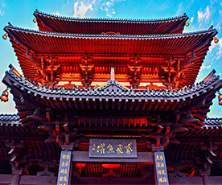

- Information of "heritage and classic series exhibition"
- Gannan lecture hall special lecture begins
- "Poetry into the enterprise" helps to inherit traditional culture
- Langfang youth working committee held a poetry seminar
- Sanya held a symposium on intangible cultural heritage inheritance and protection

-
Building style
-
Cooking culture
-
Dress features
Guilin promenade
Liuzhou temple
Guangxi ganlan
Guilin promenade
Liuzhou temple
Guangxi ganlan


Guangxi guilin free building was built in the early wude years, tang dynasty, a large number of literati since the building fushi chanting, leaving a large number of famous works.
Founded in the early years of tang zhenguan, liuzhou wenmiao is composed of dacheng gate, dacheng hall, chongsheng temple, Ming lun hall and other main buildings, mainly built in song dynasty style
Guangxi ganlan house is praised as China's most local style of five traditional residential building forms, the history books on the "upper living people, the lower circle livestock" houses called "ganlan."
Glutinous rice
tea-oil tree
sashimi
Glutinous rice
tea-oil tree
sashimi


Every year on the third day of the third lunar month, the zhuang people use five-colored sticky rice to entertain guests, which is also used to sweep the ancestors of one of the offerings.
The original dongxiang people of oil tea, drinking oil tea can protect against cold and disease.The custom becomes natural, the dozen oil tea then becomes generation to pass along the national custom.
Heng county fish production is exquisite, amazing.It represents the highest standard of cooking technology and food culture in hengxian county and the highest standard of receiving guests.
Zhuang costume
Pointed furnace
Miao nationality
Zhuang costume
Pointed furnace
Miao nationality


The zhuang costume mainly consists of blue and black dress and short dress.Their general attire was a blue and black dress.
The pattern of pendants for both men and women is basically the same.The hats were all pointed, and the headscarf could only be wrapped .
The miao people like to sew clothes and trousers with stone blue cloth. This kind of cloth is self-knitting and self-dyeing.
Folk art master
-
GUI Tea-picking drama——Chenshengqiang
Chenshengqiang,Male, han nationality, born in March 1947, technical secondary school culture, national level 3 actor, curator of culture museum, bobai county, yulin city, retired.In 2008, it was named as the representative inheritor of the second batch of national project "southern guangxi tea opera".
While working in the theater, I trained many performers.After leaving the troupe, Chen used his spare time to receive several young actors such as yu xiaodong, pang donghai and lu guangdong as training objects.
-
Burning of nixing pottery——Lirenbing
Lirenbing,Male, han nationality, born in March 1946, junior college culture, senior craft artist of guangxi qinzhou nixing pottery co., LTD.In 2009, it was named as the representative inheritor of qinzhou nixing pottery firing technology, the third batch of national project,
Since then, he has held more than 60 technical training classes, trained Chen renhui and qinzhou university ceramic majors 108 people, among which more than 40 became outstanding technical talents and production experts.
-
Dong singer——Wuguangzu

WuguangzuMale, dong nationality, born in April 1944, junior middle school culture, group 6, xinmin village, meilin township, dong autonomous county, sanjiang.In 2008, it was named as the representative inheritor of the second batch of national project "dong da ge" autonomous region."Da-ge of dong nationality", with its beautiful melody and strong culture of dong nationality, has attracted wide attention of music industry at home and abroad.
Since his childhood, wu zuguang was fond of literature and art and learned from wu qirui and wu gongzhai. In 1952, he began to learn to sing "dong big songs", "dong opera", "dong pipa songs" and other folk music.